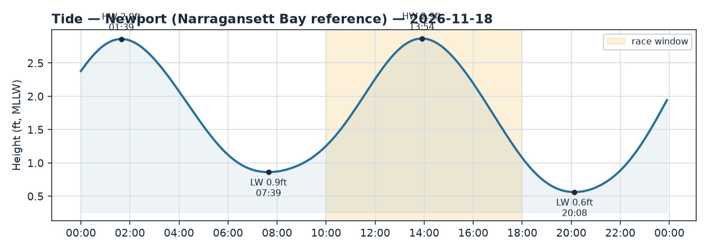
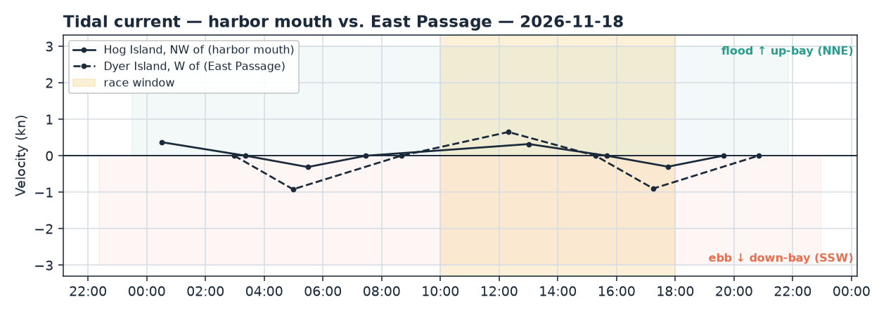

Bristol Harbor · Rhode Island
Wed 18 Nov 2026 · Daysail
A crisp, sunny November sail — light-to-moderate westerly, easiest water before the late-afternoon chill; aim for midday.
The day
It's a lovely late-fall day to get out if you dress for it — bright sun, mild for November, and a manageable westerly that's more "pleasant sail" than "hang-on" for most of the day. Think mellow daysail with the occasional puff rather than a big-breeze workout. The one catch is the calendar: the sun sets early now, so your good window is the middle of the day, not the late afternoon.
Wind
Expect a westerly to west-northwesterly all day, generally in the nice-sailing range (roughly 6–12 kt) with puffs that can nudge toward powered-up in the gusts (the forecast tops out near 14 kt, and the marine forecast mentions gusts to 20). There's a real split in the signals worth knowing: the up-bay anemometer at Conimicut has been reading a solid 10–14 kt, while down at the Newport mouth it's a softer 5–7 kt — and the models have been running a touch strong today. So the honest read is patchy: lulls where you'll want to keep the sails full, and lively puffs where a smaller crew will notice it. No reef needed for most boats, but keep a hand on the sheet.
Because the breeze is out of the west, expect a soft, shifty patch tucked in behind Poppasquash Neck on the harbor's western shore — the Neck shadows the wind to its east and southeast, so don't be surprised if you glide into a hole there and have to work out of it. You'll find steadier, cleaner air out toward the harbor mouth by Hog Island and into the East Passage. Best time to be out is late morning into early afternoon, while the sun's up and the breeze is at its friendliest.
Tide & current
High water is at 1:54 PM (about 2.9 ft) and the previous low was at 7:39 AM, so you've got a rising, comfortably full harbor through your whole sail — no low-water worries midday. Just keep the usual respect for the shallow edges near the harbor shoreline later on, as the tide starts dropping toward the evening low (8:08 PM).
Current is gentle inside the harbor — only about a quarter-knot at the Hog Island mouth, flooding (gently setting up-bay/north) until it goes slack around 3:40 PM, then easing into a light ebb. Out in the East Passage it runs stronger, up to roughly a knot, with a slack around 3:17 PM. With the wind out of the west and the current running north–south, you won't get much nasty wind-against-tide chop — expect only around 1–2 ft of easy waves. Nothing a casual sailor needs to fuss over.
Good to know
Gorgeous sunny, clear skies and no rain in the picture — just a classic bright November day. It'll be cool, mid-50s, so dress in warm layers, bring a windbreaker, and remember that even light breeze over cool water feels brisk; gloves and a hat aren't a bad idea. The water's cold this time of year, so a life jacket on is the smart call, especially in the gusts. Plan to head out mid-to-late morning and make a point of being back by mid-afternoon — sunset comes early now (around 4:30), and you don't want to be sorting lines in the chill and fading light. Have a great sail!


